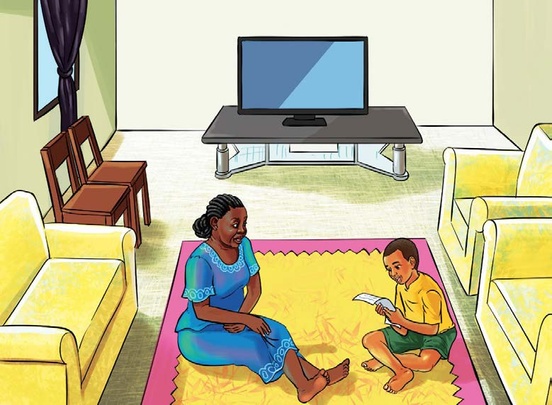

alijaribu kumbembeleza, lakini Kanenge hakuonesha badiliko lolote. Muda wa kuandaa chakula ulipofika, shangazi alienda jikoni kupika. Kanenge akiwa sebuleni peke yake, aliwasha redio akaanza kusikiliza.
Ilipofika saa saba, alisikia mtangazaji akisema, “Karibuni ndugu wasikilizaji katika kipindi cha afya zetu! Mtaalamu wa afya atatufundisha kuhusu jinsi ya kuishi na virusi vya UKIMWI.” Taarifa hiyo ilipenya katika masikio ya Kanenge. Alikimbia kuelekea chumbani kwake, akachukua kalamu na karatasi, akasogea na kukaa karibu na redio. Mtaalamu alieleza mambo mengi yanayohusiana na namna ya kuishi na virusi vya UKIMWI. Kipindi hiki cha redioni kilileta matumaini mapya kwa Kanenge. Kipindi kilipokwisha, Kanenge aliandika insha hii:
Namna ya Kuishi na Virusi vya UKIMWI
UKIMWI ni ugonjwa unaosababishwa na virusi vya UKIMWI (VVU). Ugonjwa huu hudhoofisha kinga ya mwili, na kumfanya mtu kuugua magonjwa mbalimbali kwa urahisi. Hata hivyo, mtu mwenye VVU anaweza kuishi maisha marefu ikiwa atafuata ushauri wa madaktari na kujitunza vizuri.
Mtu anayeishi na VVU anapaswa kunywa dawa maalumu zinazoitwa ARV kila siku. Dawa hizi husaidia mwili kupambana na virusi vya UKIMWI na kuzuia magonjwa mengine. Pia, ni muhimu kula chakula bora kama mboga za majani, matunda na vyakula vyenye protini ili mwili uwe na nguvu.
Vilevile, anapaswa kufanya mazoezi mara kwa mara ili kuwa na afya njema na kupunguza mfadhaiko. Pia, anatakiwa kukaa na familia na marafiki wenye upendo. Hii itamsaidia kuwa na furaha na kuondoa mawazo ya upweke.
Aidha, jamii haipaswi kuwanyanyapaa watu wenye VVU, bali ina jukumu la kuwaonesha upendo na kuwasaidia. Hivyo, kila mtu anaweza kusaidia kwa kuelimisha wengine kuhusu ugonjwa wa UKIMWI na kuwa karibu na wale walioathirika.
Kila mtu mwenye VVU anaweza kuishi vizuri ikiwa atajitunza vizuri, atakunywa dawa kwa wakati na kupata msaada wa watu wanaomjali.
Baada ya kukamilisha uandishi wa insha, Kanenge alikimbilia jikoni huku akiita kwa sauti ya furaha, “Shangazi! Shangazi! Shangaziiiiiii! Ninakuita mbona husikii?” Shangazi alishtuka, akauliza kwa mshangao, “Kanenge, umepatwa na nini
tena?” Kanenge alijibu, “Nimepata taarifa njema sana redioni kuhusu maambukizi ya virusi vya UKIMWI. Pia nimeandika insha kuhusu namna ya kuishi na VVU.” Ninaomba nikuambie nilichosikia redioni nikusomee insha yangu.” Shangazi alikubali. Walienda sebuleni na kuketi kwa ajili ya mazungumzo.

Shangazi alifurahi baada ya kuona Kanenge yupo katika hali ya uchangamfu na mwenye sura ya tabasamu. Alimpatia Kanenge nafasi ya kuongea. Kanenge alisema, “Mtaalamu wa afya ameeleza kwamba neno UKIMWI ni kifupi cha Upungufu wa Kinga Mwilini. Dalili zake ni homa kali za mara kwa mara, kupungua uzito, kuharisha, ngozi kusinyaa, mwili kukosa nguvu, kukosa hamu ya kula na kupata vidonda mwilini. Njia zinazosababisha kuenea kwa ugonjwa huo ni kama vile kuchangia vitu vyenye ncha kali, yaani wembe, pini, sindano; kuchangia mswaki; kufanya ngono na mtu mwenye VVU. Vilevile, mtaalamu amesema kwamba mtoto anaweza kupata maambukizi kutoka kwa mama mwenye VVU wakati wa kuzaliwa au kunyonya.” Baada ya maelezo hayo, Kanenge alimsomea shangazi insha yake, kisha alishusha pumzi akamtazama shangazi kwa jicho la upole kama ishara ya kumpa nafasi ya kuzungumza.
Shangazi alisema, “Pole sana Kanenge! Wewe ni mtoto yatima, wazazi wako walifariki kwa ugonjwa wa UKIMWI. Ulipata maambukizi kwa bahati mbaya wakati wa kuzaliwa. Hata hivyo, usijali; nitaendelea kukuhudumia kwa kukupatia mahitaji yako yote na kukupeleka hospitalini siku za kliniki.” Aidha, nitaipeleka insha yako kwenye gazeti. Ikishachapishwa watu wengi wataelimika kuhusiana na UKIMWI.
Maelezo hayo yalimfurahisha sana Kanenge.
Alimkumbatia shangazi yake, kisha akasema, “Asante sana kwa kunijali.” Shangazi akajibu, “Usijali, wahenga walisema damu ni nzito kuliko maji.”
Siku iliyofuata, shangazi alimpeleka Kanenge hospitalini. Walipewa ratiba ya siku za kuhudhuria kliniki. Baada ya afya ya Kanenge kuimarika, aliendelea na masomo yake. Aliongeza bidii zaidi katika masomo, akafaulu mtihani wa kuhitimu elimu ya msingi. Aliendelea na masomo ya sekondari hadi kidato cha sita. Baadaye alisoma na kuhitimu shahada yake ya kwanza. Kisha, akaajiriwa katika kiwanda cha maziwa kilichopo katika Jiji la Shamnda. Baada ya muda, alipandishwa cheo na kuwa mkurugenzi mkuu wa kiwanda hicho. Hivi sasa Kanenge ana familia yenye watoto watatu.